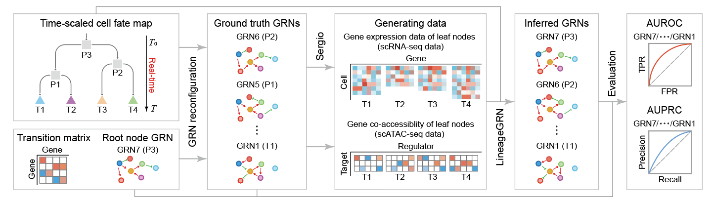
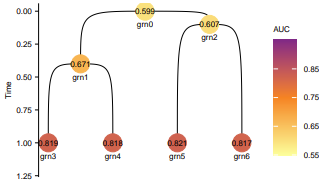
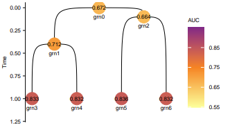

Example of simulation data¶
In this tutorial, we demonstrate the basic usage of LineageGRN using synthetic simulated data.
Workflow Overview¶
Input Data:
We start by providing a time-scaled cell fate map and initializing a gene regulatory network (GRN) for the progenitor cell cluster at the root node.GRN Generation:
By assigning state transition rates to each regulatory interaction, we generate GRNs for all downstream nodes of the fate map, which serve as the ground truth for subsequent analyses.Data Simulation:
Based on the GRNs of the leaf nodes (representing cell clusters of sampled cells), we simulate scATAC-seq data.
We use the SERGIO algorithm to generate scRNA-seq data.
Validation:
The simulated data enables us to evaluate the performance of LineageGRN in inferring and reconstructing dynamic GRNs across the time-scaled fate map.
This example highlights how LineageGRN integrates scATAC-seq and scRNA-seq data with lineage tracing to reconstruct dynamic gene regulatory networks.

# Importing packages
import numpy as np
import pandas as pd
import os
import re
from lineagegrn.plot.plot_analysis_results import *
from lineagegrn.downstream_analysis import *
from lineagegrn.utils.constants import *
from lineagegrn.utils.synthetic_data_generation import *
from lineagegrn.cell_lineage_reconstruction import *
from lineagegrn.gene_regulatory_network import*
from lineagegrn.utils.metrics import *
Input Data¶
In this example, we directly take the topology structure of a time-scaled fate map fate_map_edge_dict with 7 nodes (cell clusters) as input. Besides, we need to set a state transition rate lambda to measure the probability of a child GRN inheriting the known regulatory relationship in its parent GRN.
fate_map_path='examples/data/simulation/input/edge_dict_simulation.csv'
edge_dict=load_fate_map_topology(fate_map_path)
edge=parse_edge_dict(edge_dict)
fate_map=FateMap(edge)
newick_format=generate_newick(fate_map)
'((T3:0.6,T4:0.6)P1:0.4,(T5:0.9,T6:0.9)P2:0.1)P0:0;'
# Rscript
Rscript plot_fate_map.R "((T3:0.6,T4:0.6)P1:0.4,(T5:0.9,T6:0.9)P2:0.1)P0:0;" 1.2 5 0.3 fate_map_plot.pdf

GRN Generation¶
Generate the root node GRN grn0¶
Give the number of regulators (100) and target genes (150), and set the path to store the root node GRN
output_path='examples/results/simulation/extra_output/ground_truth_grn'
Run
generate_root_grnand output apandas.DataFramenamedgrn0, whose rows represent regulators and columns represent target genes. Its elements range from -1 to 1, absolute values represent regulatory strength, and symbols represent activation (+) or repression (-).
grn0=generate_root_grn(150,100,output_path)
0 1 2 3 4 5 6 7 8 9 ... 140 141 142 143 144 145 146 147 148 149
150 -0.7318 0.5520 0.0000 0.0000 0.0000 0.0000 0.0000 0.0000 0.0000 -0.7566 ... 0.0000 -0.6687 -0.1849 0.0000 0.0000 0.8071 -0.3010 0.0000 0.2533 0.0000
151 0.0000 0.3824 0.4575 0.4303 0.0000 -0.0109 -0.6965 0.0000 0.0000 -0.5088 ... 0.0000 0.0000 0.0000 -0.1950 -0.2014 0.0000 -0.0074 0.0000 -0.8496 0.0000
152 -0.6151 -0.7520 0.0000 -0.5634 0.0000 -0.0332 0.0000 0.0000 0.0000 0.0000 ... 0.0000 0.0000 0.0000 -0.0441 -0.1915 0.0000 0.1513 -0.0167 0.0000 -0.8906
153 0.0000 0.0000 0.0000 0.0000 0.7510 0.0000 0.0000 0.0000 -0.7391 -0.9003 ... 0.0000 0.0000 0.4218 0.6701 0.0000 0.0000 0.5298 -0.4038 0.0000 0.5000
154 0.5171 -0.5487 -0.5332 0.0000 0.0000 0.9371 0.7675 0.1911 0.6494 0.9113 ... 0.0271 -0.0509 0.0000 0.1592 0.6060 0.0000 0.0000 0.0000 -0.9362 -0.4575
... ... ... ... ... ... ... ... ... ... ... ... ... ... ... ... ... ... ... ... ... ...
245 -0.6043 -0.1336 0.0000 0.0000 0.0000 0.0000 0.0000 0.0000 0.0590 0.0000 ... 0.0054 -0.1922 0.6736 0.0000 0.2150 0.0000 0.0000 0.0000 0.0000 0.0000
Generate the descendant GRNs grn1$\dotso$grn6¶
This step inputs the path of the dynamic reconfiguration of the gene regulatory network (same topological structure as fate map) and outputs a Dict, whose length are the number of nodes (cell clusters) on the fate map. The keys of the Dict are node_id and each value is the corresponding grn, whose columns represent target genes and rows represent regulators.
grn_dict_path='examples/data/simulation/additional_input_data/grn_dict.csv'
grn_dict=load_fate_map_topology(grn_dict_path)
decendent_grns=generate_descendant_grns(7,150,100,grn_dict,output_path,grn0)
Data Simulation¶
Generate scATAC-seq data¶
Run generate_atac_data and output a pandas.DataFrame named atac_data which must include four columns representing target_gene_id, regulator_id, co-accessibility score, and node_id respectively.
output_path='../data/simulation_data/test/input'
atac_data=generate_atac_data(decendent_grns,7,150,100,output_path)
Generate scRNA-seq data using SERGIO¶
Generate two files required by SERGIO.
Run
generate_expression_dataand output a dataframe for each node, whose columns represent sampled cells and rows represent regulator genes and target genes. The element represent the gene expression value.
sergio_files_path='examples/results/simulation/extra_output/sergio_files'
output_path='examples/results/simulation/extra_output/expression_files'
generate_expression_data(decendent_grns,7,150,100,300,sergio_files_path,output_path,1)
Start simulating new level
There are 100 genes to simulate in this layer
Done with current level
Start simulating new level
There are 150 genes to simulate in this layer
Done with current level
Start simulating new level
There are 100 genes to simulate in this layer
Done with current level
Start simulating new level
There are 150 genes to simulate in this layer
Done with current level
Start simulating new level
There are 100 genes to simulate in this layer
Done with current level
Start simulating new level
There are 150 genes to simulate in this layer
Done with current level
Start simulating new level
There are 100 genes to simulate in this layer
Done with current level
Start simulating new level
There are 150 genes to simulate in this layer
Done with current level
Run
convert_expression_fileto convert gene expression data into LineageGRN input format. The final algorithm input is a dataframe which includes five columns:gene_id,cell_id,gene expression_value,node_id,gene_type(regulator or target gene).
input_file='examples/results/simulation/extra_output/expression_files'
output_file='examples/data/simulation/input/expression_data.csv'
target_genes_name=pd.read_csv('examples/data/simulation/additional_input_data/target_genes_name.csv')['x'].tolist()
regulatory_genes_name=pd.read_csv('examples/data/simulation/additional_input_data/regulatory_genes_name.csv')['x'].tolist()
convert_expression_file(150,target_genes_name,regulatory_genes_name,input_file,output_file)
gene cell value node_id gene_type
0 target_0 cell_0 10.0 grn3 target_gene
1 target_0 cell_1 18.0 grn3 target_gene
2 target_0 cell_2 15.0 grn3 target_gene
3 target_0 cell_3 13.0 grn3 target_gene
4 target_0 cell_4 11.0 grn3 target_gene
... ... ... ... ... ...
74995 regulator_99 cell_295 1.0 grn6 regulator_gene
74996 regulator_99 cell_296 1.0 grn6 regulator_gene
74997 regulator_99 cell_297 1.0 grn6 regulator_gene
74998 regulator_99 cell_298 4.0 grn6 regulator_gene
74999 regulator_99 cell_299 0.0 grn6 regulator_gene
300000 rows × 5 columns
Data Simulation¶
Input synthetic gene expression and co-accessibility profiles¶
atac_file_path = "examples/data/simulation/input/atac_data.csv"
expression_file_path = "examples/data/simulation/input/expression_data.csv"
Run the inference function¶
This step outputs a dataframe for each target gene, whose number of rows is equal to nodes_number (7), and the number of columns is related to regulator_number. The first column of this dataframe is target_gene_id, the second column is node_id, and the third to the last column indicates the regulatory strength and regulation mode (activation or repression) of the target gene by the corresponding regulator.
saved_dir='examples/results/simulation/inferred'
grns=FateMap(parse_edge_dict(grn_dict))
grn_inference = GRNInference(atac_file_path,expression_file_path,grns,saved_dir)
grn_inference.estimate_all_target_genes()
-2024-09-24 11:32:58,551-INFO-52272 Start fitting target_gene_id:1
-2024-09-24 11:34:56,762-INFO-25168 Finish inferencing leaves grn value for target_gene_id:1
-2024-09-24 11:34:56,763-INFO-25168 Saved grn values for target_gene_id:1
... ...
We can also output the target gene network for each target gene in a Dict by running the method .get_target_networks. In this method, we need to set a threshold (0.1) to screen for the effective regulatory relationships.
target_networks_dict=grn_inference.get_target_networks(0.1)
{"grn3": {"0": {"lambda": 0.6116428512359448,"grn_value": [0.0, 0.0, 0.0, 0.0, 0.0, 0.0, -0.4425698207514982, 0.29298224636154474, 0.0, 0.0, 0.4353533375160287, 0.0, 0.5065959649468524, 0.3509382546110441, ..., 0.0, 0.35099408963364565, 0.0, -0.21043651910705435, 0.0]}}
The third optional gene regulatory network output format is a Dict, where the key of the Dict is node_id, and each value is a pandas.DataFrame with the number of rows being the number of target genes and the number of columns being the number of regulated genes.
dynamic_networks_dict=get_dynamic_networks(saved_dir,grns,0.1,regulatory_genes_name,target_genes_name)
{'grn0': regulator_0 regulator_1 regulator_2 regulator_3 regulator_4 \
target_0 -0.379122 0.711633 0.000000 0.000000 0.131632
target_1 -0.336749 0.193371 0.000000 -0.502988 -0.169468
target_2 -0.105994 0.000000 -0.180427 0.000000 0.562621
target_3 0.000000 0.000000 0.000000 0.000000 0.148689
target_4 0.000000 0.000000 0.258889 0.400358 0.000000
... ... ... ... ... ...
target_145 -0.412486 0.000000 -0.246471 0.000000 0.462467
target_146 0.415713 -0.140728 -0.724423 0.195241 0.000000
target_147 0.000000 -0.140601 0.000000 -0.461557 0.384506
target_148 0.000000 -0.244510 0.000000 -0.155289 0.000000
target_149 -0.234581 0.198741 -0.189440 0.000000 0.000000
regulator_5 regulator_6 regulator_7 regulator_8 regulator_9 \
target_0 -0.153831 -0.379208 0.000000 0.000000 -0.253205
target_1 0.000000 0.000000 0.145741 0.000000 0.000000
target_2 0.000000 -0.426593 0.287834 0.664276 0.000000
target_3 0.269684 0.295407 0.540570 0.219219 0.347215
target_4 0.476580 -0.234921 -0.274365 0.000000 0.000000
... ... ... ... ... ...
target_145 0.586070 0.000000 0.000000 0.115736 0.565307
target_146 0.000000 0.118883 0.285013 0.219476 -0.100838
target_147 0.138593 0.000000 -0.411954 -0.144207 -0.209958
target_148 0.000000 0.000000 -0.143893 0.000000 0.294248
target_149 0.000000 -0.515080 0.000000 0.000000 -0.385077
...
target_147 -0.157546 0.000000 0.193603
target_148 0.716554 0.790531 -0.183264
[150 rows x 100 columns]}
Visualization¶
For a fate map, we can use the .get_path method to output the path of any specified leaf node and visualize the inferred gene regulatory network along the path.
grns.get_path('grn5')
['grn0', 'grn2', 'grn5']
Take the gene regulatory network in the selected path from dynamic_network_dict and transform it in format. Use the get_gene_interaction function to output a three-column pandas.DataFrame, where the first column is regulator_id, the second column is target_gene_id, and the third column is regulatory_strength.
network0,network2,network5=dynamic_networks_dict['grn0'],dynamic_networks_dict['grn2'],dynamic_networks_dict['grn5']
network0.columns=network2.columns=network5.columns=regulatory_genes_name
network0.index=network2.index=network5.index=target_genes_name
gene0_interaction, gene2_interaction, gene5_interaction = get_gene_interaction(network0),get_gene_interaction(network2),get_gene_interaction(network5)
gene0_interaction.to_csv('examples/results/simulation/extra_output/gene0_interaction.csv',header=None)
gene2_interaction.to_csv('examples/results/simulation/extra_output/gene2_interaction.csv',header=None)
gene5_interaction.to_csv('examples/results/simulation/extra_output/gene5_interaction.csv',header=None)
Visualize gene regulatory networks on selected pathways. The gene regulatory networks shown are grn0, grn2 and grn5.
# Rscript
Rscript plot_grn.R examples/results/simulation/extra_output/expression_files/Exp_grn5.csv examples/data/simulation/additional_input_data/target_genes_name.csv examples/data/simulation/additional_input_data/regulatory_genes_name.csv examples/results/simulation/extra_output/gene0_interaction.csv grn0_plot.pdf
Rscript plot_grn.R examples/results/simulation/extra_output/expression_files/Exp_grn5.csv examples/data/simulation/additional_input_data/target_genes_name.csv examples/data/simulation/additional_input_data/regulatory_genes_name.csv examples/results/simulation/extra_output/gene2_interaction.csv grn2_plot.pdf
Rscript plot_grn.R examples/results/simulation/extra_output/expression_files/Exp_grn5.csv examples/data/simulation/additional_input_data/target_genes_name.csv examples/data/simulation/additional_input_data/regulatory_genes_name.csv examples/results/simulation/extra_output/gene5_interaction.csv grn5_plot.pdf

Validation¶
Calculate the AUROC and AUPRC value.¶
This step traverses all fate map nodes and outputs the AUROC and AUPRC obtained by comparing the inferred gene regulatory network with the real gene regulatory network.
nodes=list(fate_map.nodes.keys())
auroc_list=[]
auprc_list=[]
for node_id in nodes:
grn_infer=dynamic_networks_dict[node_id]
grn_true=pd.read_csv('examples/data/simulation/extra_output/ground_truth_grn/'+node_id+'.csv')
grn_true=grn_true.T
auroc=compute_auroc(grn_infer,grn_true,0.1)
auprc=compute_auprc(grn_infer,grn_true,0.1)
print([node_id,auroc,auprc])
auroc_list.append([node_id,auroc])
auprc_list.append([node_id,auprc])
auroc_df=pd.DataFrame(auroc_list)
auroc_df.columns=['node_id','value']
auprc_df=pd.DataFrame(auprc_list)
auprc_df.columns=['node_id','value']
auprc_df.to_csv('examples/results/simulation/evaluation_result/auprc.csv',index=None)
auroc_df.to_csv('examples/results/simulation/evaluation_result/auroc.csv',index=None)
['grn0', 0.5994519770589117, 0.6717228828294495]
['grn1', 0.6709248585954783, 0.712408224107377]
['grn2', 0.6072614237064434, 0.6640750302853287]
['grn3', 0.8188240085184858, 0.8332435186071212]
['grn4', 0.8177177242199248, 0.8321948886133066]
['grn5', 0.8214236542051112, 0.8364298746683348]
['grn6', 0.8170608500573491, 0.8317090516001567]
Visualization¶
# Rscript
Rscript plot_AUC.R "((grn3:0.6,grn4:0.6)grn1:0.4,(grn5:0.9,grn6:0.9)grn2:0.1)grn0:0;" examples/results/simulation/evaluation_result/auroc.csv AUROC_plot.pdf TRUE
Rscript plot_AUC.R "((grn3:0.6,grn4:0.6)grn1:0.4,(grn5:0.9,grn6:0.9)grn2:0.1)grn0:0;" examples/results/simulation/evaluation_result/auprc.csv AUPRC_plot.pdf TRUE
 